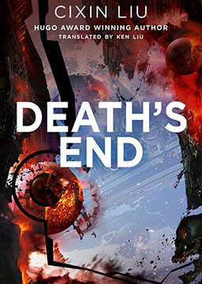
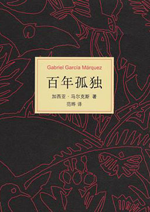

双语小说
收录中英文双语小说300多部，包括世界经典名著、社会小说、悬疑小说等短篇和长篇小说，可按照初中难度、高中难度和大学难度分类阅读，每部小说都有分段中英文对照，点击单词可查看中文翻译。

三体3: 死神永生 (Deaths End)
作者：刘慈欣 (Cixin Liu) [中国]
在地球人类接近灭亡之际，只有程心和艾AA两个幸存者乘坐光速飞船离开。罗辑成为设置于冥王星的地球文明博物馆的“守墓人”，她们在冥王星带走人类文明的精华。在云天明送的恒星的一颗行星上，程心遇到关一帆且探讨了宇宙降维的真相，然而超乎一切之上的力量要求宇宙归零重生，在黑域中穿越长达1800万年的时空……程心没有等到云天明到来，和关一帆在小宇宙中短暂居住后重新进入大宇宙生活
三体2: 黑暗森林 (The Dark Forest)
作者：刘慈欣 (Cixin Liu) [中国]
三体人在利用科技锁死了地球人的科学之后，出动庞大的宇宙舰队直扑太阳系，面对地球文明前所未有的危局，人类组建起同样庞大的太空舰队，同时（PDC）利用三体人思维透明的致命缺陷，制订了“面壁计划”。出乎意料地，社会学教授罗辑被选出作为四位“面壁者”之一，展开对三体人的秘密反击。虽然三体人自身无法识破人类的计谋，却依靠由地球人中的背叛者挑选出的“破壁人”与“面壁者”进行智慧博弈。在这场你死我活的文明生存竞争中，罗辑由一开始的逃避和享乐主义逐渐意识到自己的责任心，想到了一个对抗三体文明入侵的办法。科研军官章北海试图借一场陨石雨干涉飞船推进形式的研究方向。近二百年后，获选增援未来的他在人类舰队被“水滴”清除殆尽前，成功抢夺战舰逃离。此时罗辑证实了宇宙文明间的黑暗森林法则，任何暴露自己位置的文明都将很快被消灭。借助于这一发现，他以向全宇宙公布三体世界的位置坐标相威胁，暂时制止了三体对太阳系的入侵，使地球与三体建立起脆弱的战略平衡。三体 (The Three-Body Problem)
作者：刘慈欣 (Cixin Liu) [中国]
作品讲述了地球人类文明和三体文明的信息交流、生死搏杀及两个文明在宇宙中的兴衰历程。其第一部经过刘宇昆翻译后获得了第73届雨果奖最佳长篇小说奖。2020年4月，列入《教育部基础教育课程教材发展中心 中小学生阅读指导目录（2020年版）》高中段文学阅读。内容简介：文化大革命如火如荼地进行，天文学家叶文洁在期间历经劫难，被带到军方绝秘计划“红岸工程”。叶文洁以太阳为天线，向宇宙发出地球文明的第一声啼鸣，取得了探寻外星文明的突破性进展。三颗无规则运行的太阳主导下，四光年外的“三体文明”百余次毁灭与重生，正被逼迫不得不逃离母星，而恰在此时，他们接收到了地球发来的信息。对人性绝望的叶文洁向三体人暴露了地球的坐标，彻底改变了人类的命运。地球的基础科学出现了异常的扰动，纳米科学家汪淼进入神秘的网络游戏《三体》，开始逐步逼近这个世界的真相。汪淼参加一次玩家聚会时，接触到了地球上应对三体人到来而形成的一个秘密组织（ETO）。地球防卫组织中国区作战中心通过“古筝计划”，一定程度上挫败了拯救派和降临派扰乱人类科学界和其他领域思想的图谋，获悉处于困境之中的三体人为了得到一个能够稳定生存的世界决定入侵地球。在运用超技术锁死地球人的基础科学之后，庞大的三体舰队开始向地球进发，人类的末日悄然来临。
请以你的名字呼唤我 (Call Me By Your Name)
作者：安德烈·艾席蒙 (André Aciman) [美国]
本书美丽与智慧兼具，分毫不差地以既轻盈又凝缩的谨慎，写作其戏剧场面每一刻的精确真实。这也是一本绝佳的小说，描述地中海夏日感官的光芒，与充满欲望的日日夜夜。2017年11月，根据该小说改编的电影《请以你的名字呼唤我》上映，后获第90届奥斯卡金像奖最佳改编剧本奖。内容简介：故事发生在20世纪80年代的意大利里维埃拉，突如其来的爱彷佛林中奔出的野兽，攫住了17岁少年艾利欧的身与心。他爱上了大他6岁、来意大利游历的美国博士生奥利弗。两人对彼此着迷、犹疑、试探，让情欲在涌动中迸发，成就了一段仅仅为时六周的初恋。这段美好的夏日之恋，在两人心中留下了不可磨灭的印记。罗密欧与朱丽叶 (Romeo and Juliet)
作者：威廉·莎士比亚 (William Shakespeare) [英国]
主人公罗莎莉是罗密欧遇到朱丽叶前的情人。故事中，罗莎莉坚信自己与罗密欧是天生一对，注定会走到一起，但表妹朱丽叶的出现却令她梦想破灭。带着对罗莎莉的仇恨，朱丽叶用尽一切办法迷倒了罗密欧。然而故事并没有就此结束，关于朱丽叶疯狂行径的流言四起，使得罗莎莉开始为心上人安全而担忧。
福尔摩斯: 巴斯克维尔的猎犬（简化版） (The Hound of the Baskervilles)
作者：阿瑟·柯南·道尔 (Arthur Conan Doyle) [英国]
在福尔摩斯的巧妙安排之下，他的忠实搭档华生医生陪伴亨利爵士回到巴斯克维尔庄园。 在巴斯克维尔庄园期间，华生医生接二连三地遇到了种种怪异之事，如半夜时分女人凄惨的哭声，管家白瑞摩夜间可疑的举动，还有他后来发现的一封查尔斯爵士死前未被完全烧毁的信件的碎片，等等。这诸多的疑团使他如坠入云雾之中。他决定开始深入虎穴探听虚实。
福尔摩斯: 血字的研究 (A Study In Scarlet)
作者：阿瑟·柯南·道尔 (Arthur Conan Doyle) [英国]
从阿富汗战场受伤退役的华生医生，和一个刚从医学院毕业的年轻人合租了伦敦贝克街221号乙的一套公寓。很快，他发现这位名叫歇洛克·福尔摩斯的年轻人具有超越常人的缜密观察力和非凡的推理分析能力，同时，时常有一些神秘的访客出入他们的寓所。直到有一天，他们卷入了一起谋杀案……福尔摩斯牛刀初试第一案，精彩纷呈！羊脂球 (Ball of Fat)
作者：居伊·德·莫泊桑 (Maupassant G.D) [法国]
首次发表便震惊了法国文坛，它奠定了莫泊桑在法国文学史上的地位。严师福楼拜也称之为杰作。从此，莫泊桑“像流星一样进入文坛”。内容简介：普法战争时，法国的一群贵族、政客、商人、修女等高贵者，和一个叫作羊脂球的妓女，同乘一辆马车逃离普军占区，在一关卡受阻。普鲁士军官要求同羊脂球过夜，遭到羊脂球拒绝，高贵者们也深表气愤。但马车被扣留后，高贵者们竟施展各种伎俩迫使羊脂球就范，而羊脂球最终得到的却是高贵者们的轻蔑。小说反衬鲜明，悬念迭生，引人入胜，写出了法国各阶层在占领者面前的不同态度，揭露了贵族资产阶级的自私、虚伪和无耻，赞扬了羊脂球的牺牲精神。
欧亨利短篇小说集 (The Stories Of O.Henry)
作者：欧·亨利 (O.Henry) [美国]
欧·亨利像一个有着丰富阅历的老水手，他的一生富于传奇性，当过药房学徒、牧牛人、会计员、土地局办事员、新闻记者、银行出纳员，甚至坐过监狱，并由此开始了他的写作生涯。这些故事如此贴近你的生活，让你以为就发生在自己身边。可是，在你忍不住对这种熟悉感到厌倦前，他又狠狠地给你一个出人意料的结局，然后在你的目瞪口呆中扬长而去，只留下你独自思索，独自流泪，独自微笑。
百年孤独 (One Hundred Years Of Solitude)
作者：加夫列尔·加西亚·马尔克斯 (Gabriel José de la Concordia García Márquez) [哥伦比亚]
1982年，瑞典文学院认为，马尔克斯在《百年孤独》中“创造了一个独特的天地，即围绕着马孔多的世界”，“汇聚了不可思议的奇迹和最纯粹的现实生活”，因而授予他诺贝尔文学奖。作品描写了布恩迪亚家族七代人的传奇故事，以及加勒比海沿岸小镇马孔多的百年兴衰，反映了拉丁美洲一个世纪以来风云变幻的历史。作品融入神话传说、民间故事、宗教典故等神秘因素，巧妙地糅合了现实与虚幻，展现出一个瑰丽的想象世界，成为20世纪重要的经典文学巨著之一。内容简介：霍塞·阿卡迪奥·布恩迪亚是西班牙人的后裔，住在远离海滨的一个印第安人的村庄。成人后，他与乌苏拉结婚了。由于害怕像姨母与叔父那样生出长尾巴的孩子，乌苏拉每夜都穿上特制的紧身衣，拒绝与丈夫同房，二人因此遭到邻居阿吉拉尔的耻笑。霍塞杀死了阿吉拉尔。从此，死者的鬼魂经常出现在他眼前。鬼魂那痛苦而凄凉的眼神，使人日夜不得安宁，他们只好离开村子，外出寻找安身之所。